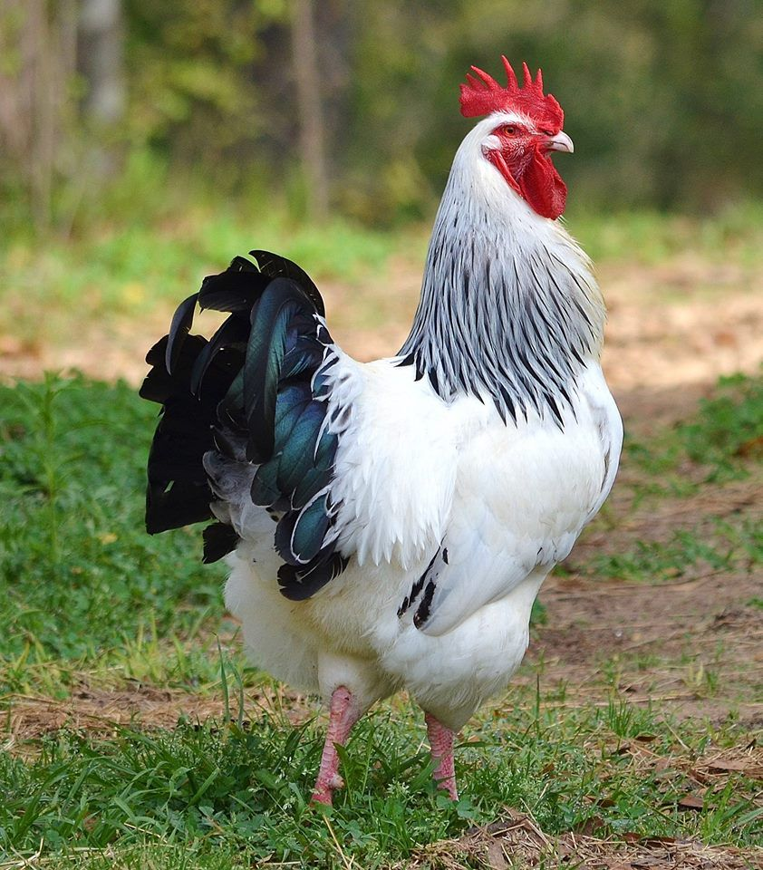
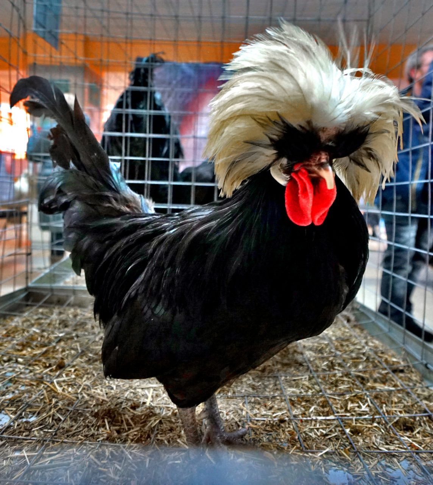

Петух
Петух – это всем известная домашняя птица. Они обладают звонким голосом и гордым видом – этим петухи запоминаются людям еще с детства. Про петухов сочиняли сказки, они являлись героями разнообразного народного фольклора. Но эти птицы не так просты, какими могут показаться на первый взгляд.

Изысканные оперение и артистичный характер: особенности петухов
Изначально петухи были одомашнены для использования в качестве птиц сельскохозяйственного производства, в частности, для производства яиц и мяса. Однако со временем они стали привлекать внимание людей своей красотой и стали популярными декоративными птицами. Одной из особенностей петухов является их красивое оперение. Они обладают яркими окрасами, включая различные оттенки красного, зеленого, черного и белого. Иногда у петухов можно наблюдать пеструю окраску, что придает им дополнительную эстетическую ценность.
Красота и гордость: петухи на выставках и конкурсах
Одной из особенностей петухов является их красивое оперение. Они обладают яркими окрасами, включая различные оттенки красного, зеленого, черного и белого. Иногда у петухов можно наблюдать пеструю окраску, что придает им дополнительную эстетическую ценность. Несмотря на их спокойный облик на картинках, петухи имеют сильный характер и могут быть достаточно агрессивными. Это можно наблюдать и во время схваток между ними. Они стремятся установить свое господство и показать свою силу другим петухам. Некоторые породы петухов могут достигать до 1 метра в высоту, что делает их еще более впечатляющими и внушительными.
